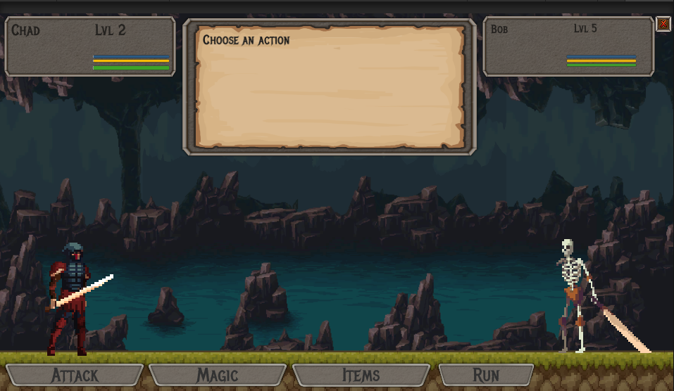

I have a few different hobbies; Gaming, anime, manga, comics,
lockpicking, swordfighting and making games.
Recently I have been heavily playing Escape from tarkov, however I
am a life long player of the toxic game league of legends, as well
as playing many other types of games and niche titles.
I have watched and read anime and manga for most of my teen life
to current, so much anime in fact that I'm quite proud that I can
semi profiecently speak japanese and understand the majority of
the shows without subtitles.
Comics been a more recent addition due to not finding the sort of
manga I want to read, searching around I found specificly webcomic
apps like webtoon serve amazing small creators making amazing
storys.
I picked up lockpicking about 2 years ago after watching way too
many lockpicking videos, specificly The
LockPickingLawyer
a legend of lock picking. Its basicly a fun game mechanic in real
life and I get the rush of being able to pick harder and harder
locks, it also being useful like in a situation where my nan lost
her keys to her window and I lockpicked it open (ignore the fact
that, that specific window took 2 hours to pick).
I started joining a Battle game style LARP about 6 years ago
called
Swordcraft
and through that in the bands that you were a part of in training
sessions you learned how to properly fight, protect yourself but
most importantly in that specific situation pull your blows
lessening the force when you hit another person, the game is very
fast paced and many different people gather to play it with over
200 people back in the normal non covid days every week on friday
in royal park.
As stated in Professional-History I studied digital and
interactive games, from there I have made a few game jam games
with some friends and made a fair few half baked but never
complete hobby games. My current unfinished project that I am
slowly working on is called Adventure quest clone.
